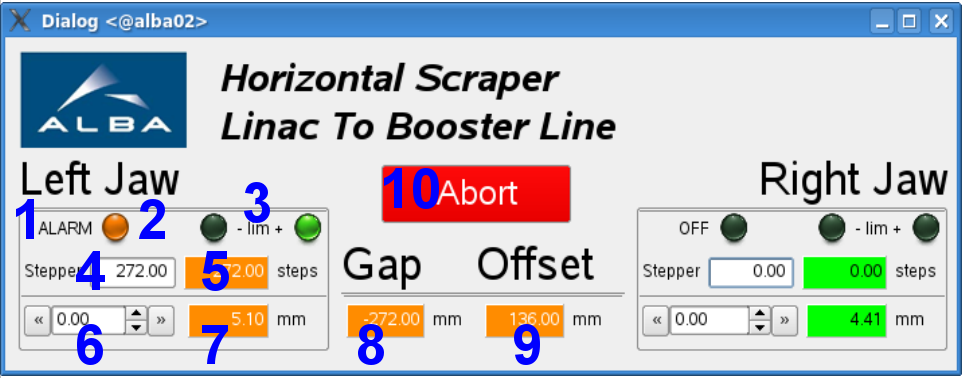

In the LINAC there are THREE scrapers, ONE in the Diagnostics Line (LT-DI-SCRH-T0201) and TWO in the Linac To Booster Line (LT-DI-SCRV-T0101 and LT-DI-SCRH-T0101).
Scrapers can be Horizontal or Vertical, and both are composed by TWO different jaws that can go inside and out of the vacuum chamber. Each jaw is operated by an Icepap Motor and it can have the following states:
ON: Everything is ok, the motor can be moved
MOVING: The motor is already moving
OFF: The motor can not be operated
ALARM: The motor has reached one end of it's way and a hardware limit is active
By convention, the jaws' ZERO position is in the center of the beam and the position increases as the jaw goes out of the beam. The GUI application contains the following elements for each jaw:
State text
State led
Negative and Positive limit switch leds
Jaw motor steps write (absolute)
Jaw motor steps read (absolute)
Move_Relative box to decrease (left) and increase (right) steps
Encoder position read
The scraper itself can be seen as a Gap (8) between the two jaws, and an Offset (9) of this gap from the center of the beam. The application contains also these TWO pseudo motors and in the near future, it will be possible for the operator to change the gap and the offset instead of moving each jaw separately.
The gap and offset values are calculated using the encoder values. Finally, just notice that there is a big Abort button (10) designed to send the Abort command to the jaw motors.
Find below an screenshot of the Linac To Booster Line Horizontal scraper.

A jaw does not move
Check with Astor and Jive that the icepap motor for that jaw is available and it's state is ON. If the status is OFF, you must use IcepapCMS to power on the driver. If the status is ALARM, a limit switch may be preventing the movement, so there's no way to move further. In any case, the Status message might help find the reason why the motor is not in the ON state.
Check that the Icepap system is reachable by issuing the ping icedi0401.cells.es command.
Please, find below the correspondence between scraper jaws and Icepap drivers:
LT-DI-SCRH-T0201 LEFT: Driver 1 (motor/ltb_ipapctrl/1); RIGHT: Driver 2 (motor/ltb_ipapctrl/2)
LT-DI-SCRV-T0101 UPPER: Driver 3 (motor/ltb_ipapctrl/3); LOWER: Driver 4 (motor/ltb_ipapctrl/4)
LT-DI-SCRH-T0101 LEFT: Driver 5 (motor/ltb_ipapctrl/5); RIGHT: Driver 6 (motor/ltb_ipapctrl/6)
Check with Astor and Jive that the ltb Pool (lt/di/pool-01) is available and it's state is ON.
Reinitialize the Pool controller with the jive command InitController and the argument ltb_ipapctrl.
REMEMBER THAT THE ltb POOL IS ALSO USED FOR OTHER PURPOSES IN THE LTB.
If all the above fails, try to use IcepapCMS JUST to check that the driver is active and powered on.
The encoder position is not shown
Check with Astor and Jive that the pseudomotor motor for the encoder is available and it's state is ON.
Please, find below the correspondence between scraper jaws and the encoder devices:
LT-DI-SCRH-T0201 LEFT: Driver 1 (pm/lt02_pmenchl/1); RIGHT: Driver 2 (pm/lt02_pmenchr/1)
LT-DI-SCRV-T0101 UPPER: Driver 3 (pm/lt01_pmencvu/1); LOWER: Driver 4 (pm/lt01_pmencvd/1)
LT-DI-SCRH-T0101 LEFT: Driver 5 (pm/lt01_pmenchl/1); RIGHT: Driver 6 (pm/lt01_pmenchr/1)
Check that the Adlink device server lt01/di/adc-scr-01 is available and it's state is RUNNING. This device server is responsible to make the encoder values accessible to the Pool.
The gap and offset can not be set
Check with Astor and Jive that the pseudomotors motor for the gap and the offset are available and it's state is ON.
Please, find below the correspondence between scraper jaws and the gap and offset devices:
LT-DI-SCRH-T0201 GAP: pm/lt02_hslit/1; OFFSET: Driver 2 (pm/lt02_hslit/2)
LT-DI-SCRV-T0101 GAP: pm/lt01_vslit/1; OFFSET: Driver 2 (pm/lt01_vslit/2)
LT-DI-SCRH-T0101 GAP: pm/lt01_hslit/1; OFFSET: Driver 2 (pm/lt01_hslit/2)
Check that the two motors used by the gap and the offset are ready to perform that movement.